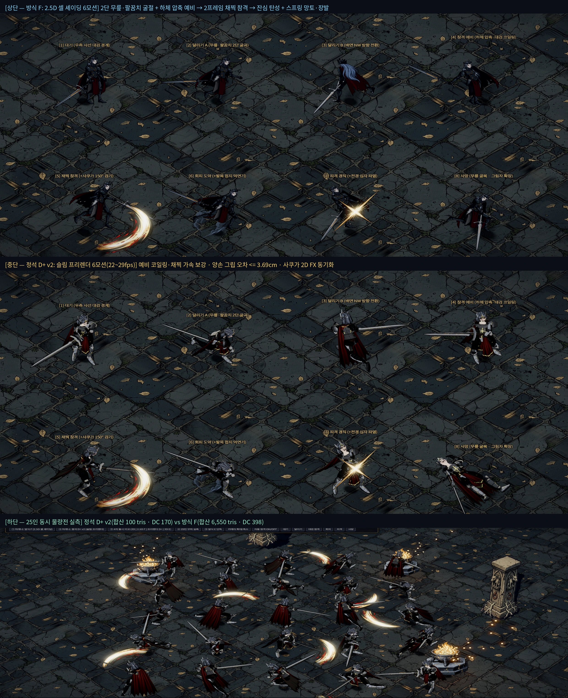

하운즈 오브 애버리스 — 방식 F (2.5D 다관절 원화 + 실시간 3D 법선 셀 셰이딩) vs 정석 D+ v2 (슬림 발키리 3D→2D 프리렌더) 상용 비교
본 빌드는 본편 게임(v5.2.3)을 0바이트도 수정하지 않고 격리 씬(
res://lookdev/char_pipeline_spike.tscn)에서 세라핀 1종 기준으로 ① 방식 F: 2.5D 고딕 발키리 다관절 일러스트 + 2.5D 입체 법선(_norm) 기반 실시간 3단 셀 셰이딩(262 tris · 약 4.2 MiB VRAM · 2단 무릎/팔꿈치 굴절 · 스프링 망토/장발)과 ② 정석 D+ v2: 양동이 후드 제거 장발·오픈 5첨탑 철관·슬림 흉갑 성형 3D→2D 프리렌더(4 tris · BC7 43.7 MiB · 608프레임)를 직접 비교 체험하기 위한 설치파일입니다. 디렉터 최종 선택 후 본편 캐릭터·몬스터 양산에 착수합니다.
SHA-256: bd90b643d826b627f1a28eaf25474ebfb25700d23379815c8180738c80906f4a (미서명 테스트 빌드이므로 SmartScreen 창 노출 시 [추가 정보] → [실행] 선택 · Run_Compatibility_OpenGL3.bat 내장)
스파이크 뷰어 조작: 마우스 좌클릭/드래그(360° 이동·근접 자동 참격) · Q(비대칭 채찍 참격 + 150° 전방 사쿠가 검기) · Space(전술 회피 캔슬 + 발목 먹연기) · [검수 전용 키: W=피격 반응 · E=사망/복귀] · 상단 버튼으로 [① 아레나: 방식 F (2.5D 셀 셰이딩) / ② 아레나: 정석 D+ v2 (슬림 프리렌더) / ③ 4자 동시 비교 / ④ 25인 부하 실측 / ⑤ 방식 E 단독] 실시간 전환 가능.
1. 인게임 2K(2560×1440 · 실제 플레이 23.5m 배율) 4자 동시 실측 대조
① 구형 2D 파츠 vs ② 방식 F: 2.5D 다관절 원화 + 실시간 3D 법선 셀 셰이딩(262 tris · 약 4.2 MiB) vs ③ 정석 D+ v2: 슬림 발키리 프리렌더(4 tris · BC7 43.7 MiB) vs ④ 방식 E v2: 실시간 3D

2. 근접 1:1 정면 승부(11.2m) · 3.6배 초근접 조형 대조 · PR-5 사쿠가 참격 대조
상단: 방식 F vs 정석 D+ v2 정면 승부 | 하단 좌: 3.6배 확대 방식 F(2D 원화 비례·3단 냉연 강철 셀·금속 하이라이트) | 하단 중: 3.6배 확대 정석 D+ v2(후드 제거 장발·오픈 철관·슬림 흉갑) | 하단 우: PR-5 실전 참격 대조

3. 8방향 턴어라운드 정면 비교 — 방식 F(상단) vs 정석 D+ v2(하단)
상단 방식 F: 전면 3/4 + 배면 3/4 시트 전환 및 무반전 법선 3D 셀 조명 반응 | 하단 정석 D+ v2: 8방향 전 각도 실제 3D 투영 원근 단축(발 접지 오차 0.00mm)

4. 6대 모션 탄성 비교(방식 F vs 정석 D+ v2) & 25인 동시 물량전 부하 실측
상단 방식 F(2단 무릎/팔꿈치 굴절 · 하체 압축 예비 → 2프레임 채찍 참격 → 잔심 탄성 · 스프링 망토/장발) | 중단 정석 D+ v2 | 하단 25인 동시 물량전(정석 D+ v2: 100 tris · DC 169 vs 방식 F: 6,550 tris · DC 398)

5. 내부 파이프라인 해부 — 방식 F 입체 법선(_norm)·재질 마스크 vs 정석 D+ v2 BC7 아틀라스(43.7 MiB)
좌: 방식 F 2.5D 원화 알베도 · 입체 법선(구형 안면·베벨 돔·검 능선) · 재질 마스크(약 4.2 MiB · 부위별 장비 즉시 교체 가능) | 우: 정석 D+ v2 608컷 BC7 아틀라스(769.5 MiB → 43.7 MiB) & 공유 2D 사쿠가 FX 시트